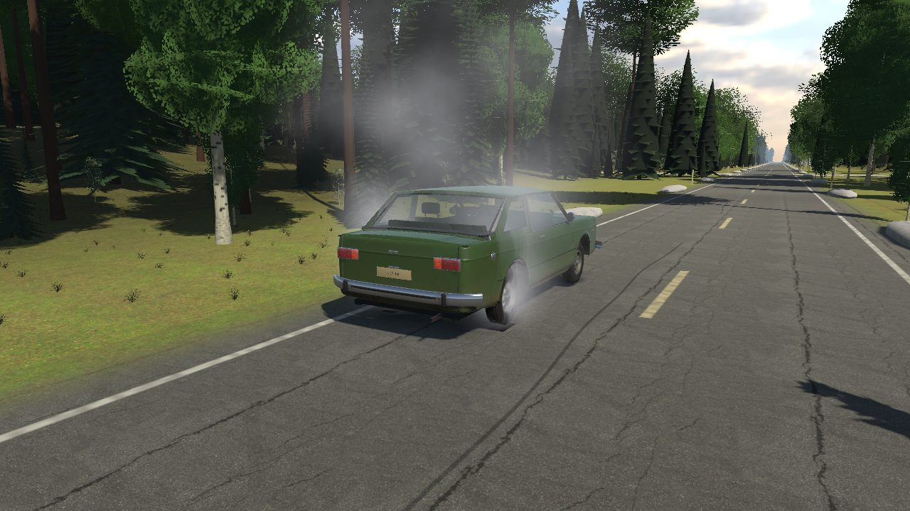
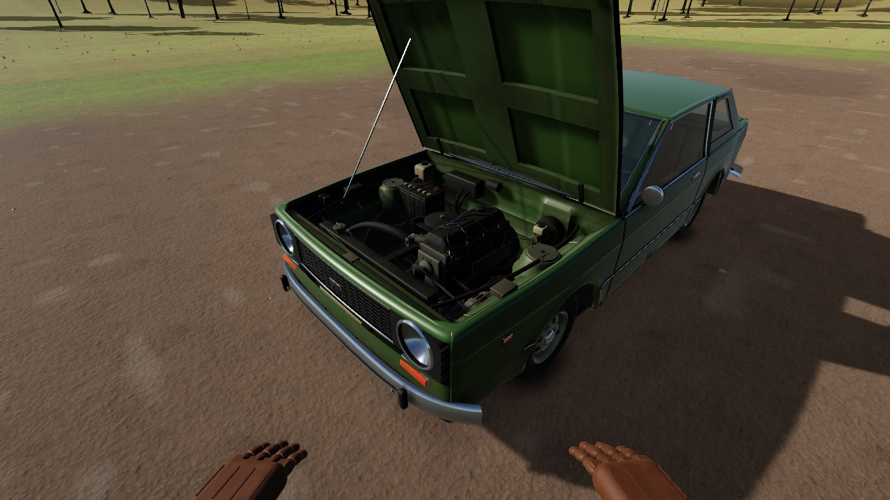
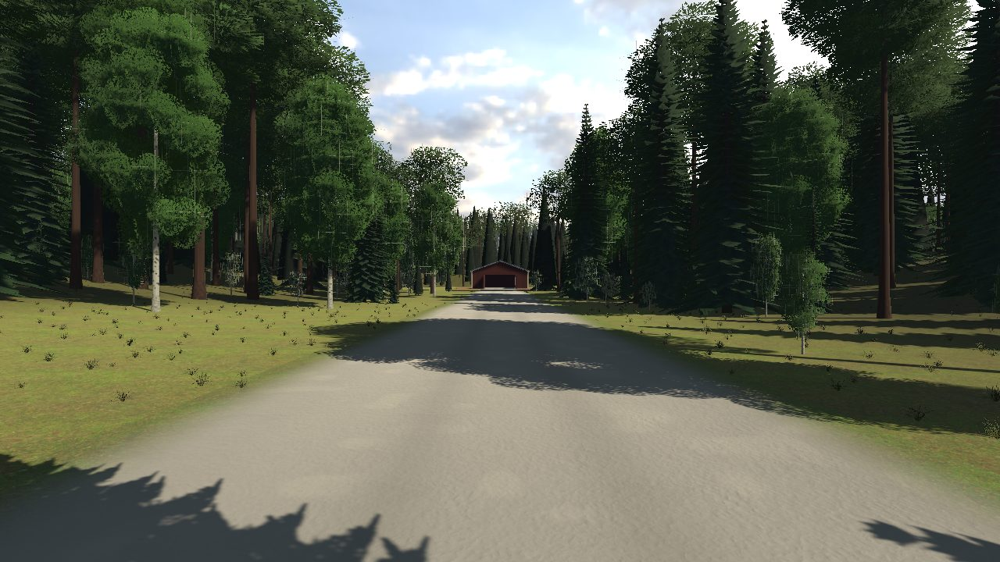
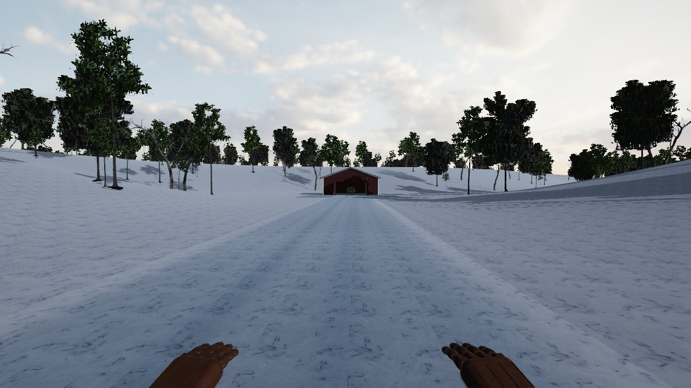
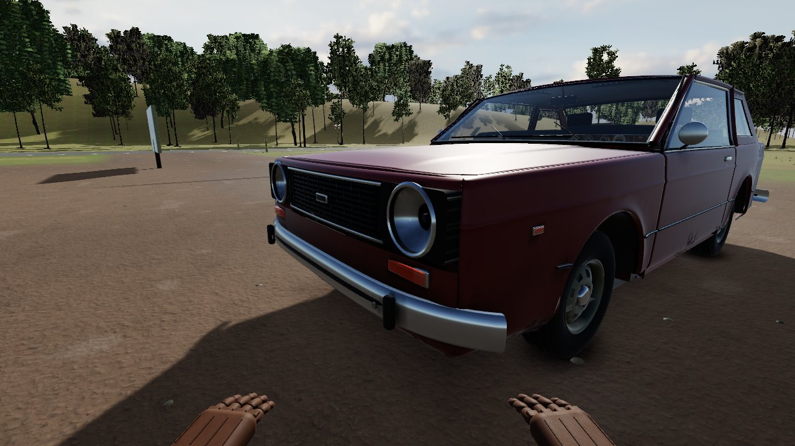
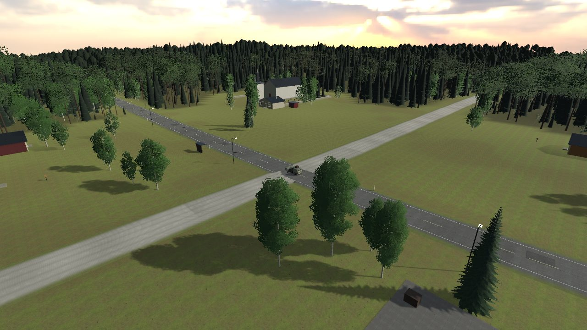
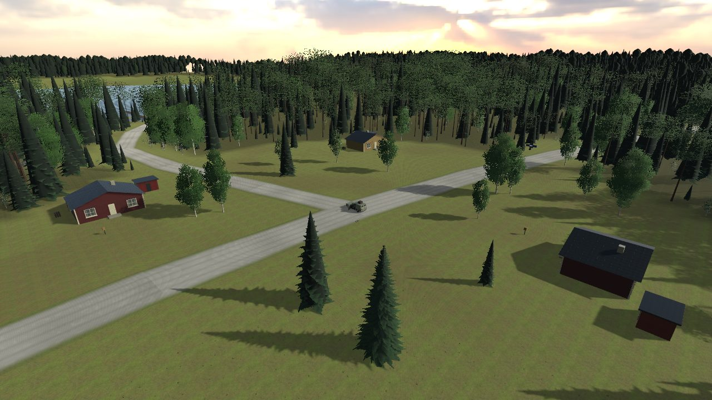
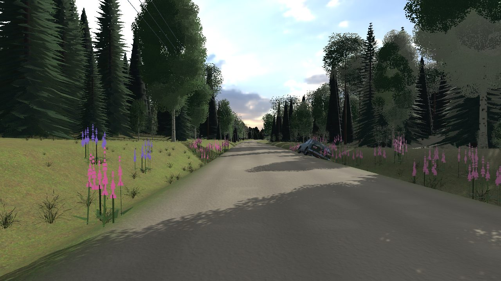
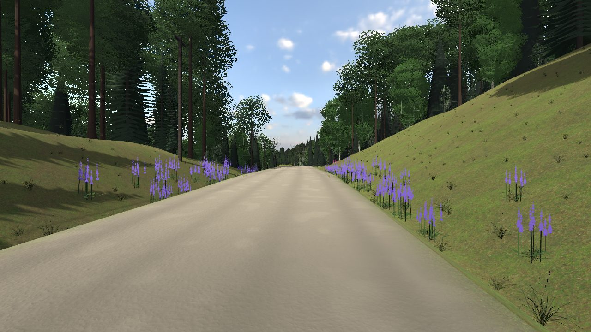

A FINNISH CAR REPAIR SIMULATOR
FINNISH
GARAGE
SIMULATOR.
An old car. Your own garage.
Always something to fix.
Finnish Garage Simulator is a car repair and driving game in development for Windows PC. Build your project car, investigate faults and take it onto Finnish country roads.
Windows PC · In development · Beta testers wanted

THE GAME
YOUR GARAGE.
YOUR NEXT PROJECT.
Hands-on repairs, driving and life in the Finnish countryside.
The game combines removable vehicle parts, bolts, tools and customer repair jobs. Part condition and installation affect the car. The fictional economy uses in-game CR credits.
Our goal is an open countryside with a story you can follow alongside your own projects. Esko’s inheritance, a neglected farm and an unfinished rally car form the campaign’s starting point. Summer and winter bring different road conditions and workshop chores, including firewood.
The mechanics, world, handling, graphics and character models are still being developed. Final content and system requirements are not confirmed.
DEVELOPMENT SCREENSHOTS / 7 NOVEMBER 2026
A LOOK INSIDE
THE BUILD.
These are real game captures, not final artwork. They show the current prototype; there is no public demo or open test to download.








DEVELOPMENT STATUS / 7 NOVEMBER 2026
STILL IN
THE WORKSHOP.
The terrain is now real Central Finland, built from the National Land Survey of Finland open data (CC BY 4.0): hills, hollows, ten lakes, fields and bogs. The world does not match any real place. Roads rise and fall with the land and have ditches, shoulders and slopes, with lupins and fireweed on the verges and wooden power poles along the main roads. Ditches are a real hazard: a car sliding in slowly can creep back out, but one that hits a ditch fast gets damaged and can fly over it into the forest. The world is about 4.8 × 4.8 km of countryside with roughly 21 km of roads, a church village, a lakeside village, a sawmill, a gravel pit and a bog. The new areas have no jobs or shops yet. Ideas from our Facebook followers are in too: a check-engine light with blink codes, frost potholes, seized rusty bolts, a back-lot car seller and customers who pay partly in moonshine. The cars and engine bay were rebuilt earlier. Earlier work updated the landscape, seasonal surfaces, sky, workshop objects and material finishes. Characters, trees and many vehicle and building details still need further art work.
Read the development update in Finnish →.
In development.
Beta testers wanted.
No public game download, demo or open test is currently available. Windows PC and Steam Early Access are the planned release direction. A release date, price and Steam store page have not been confirmed.
Contact the developer: nordhashoy@gmail.com. We are now looking for closed beta testers. Email us with the subject “Betatesti”. Beta minimum requirements: Windows 10 or 11 (64-bit), Intel Core i5-6400 or equivalent quad-core CPU, 8 GB RAM, Radeon RX 580 4 GB or equivalent DirectX 11 graphics card and 1 GB of free disk space. The game and its guide are currently in Finnish only. Contacting us does not yet guarantee a place.